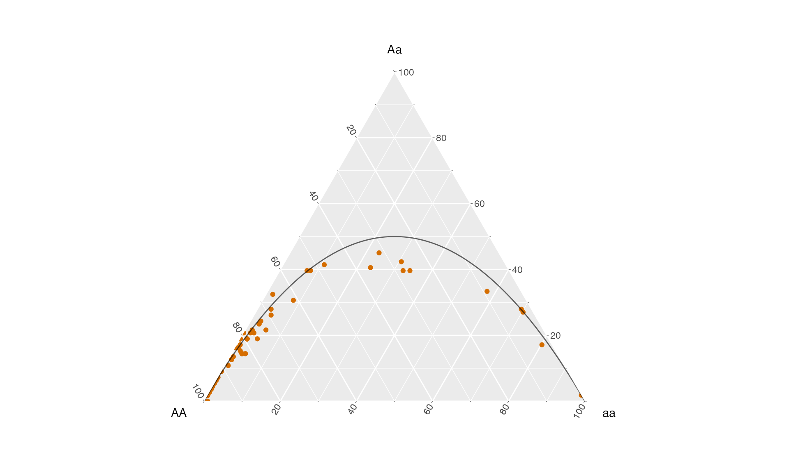
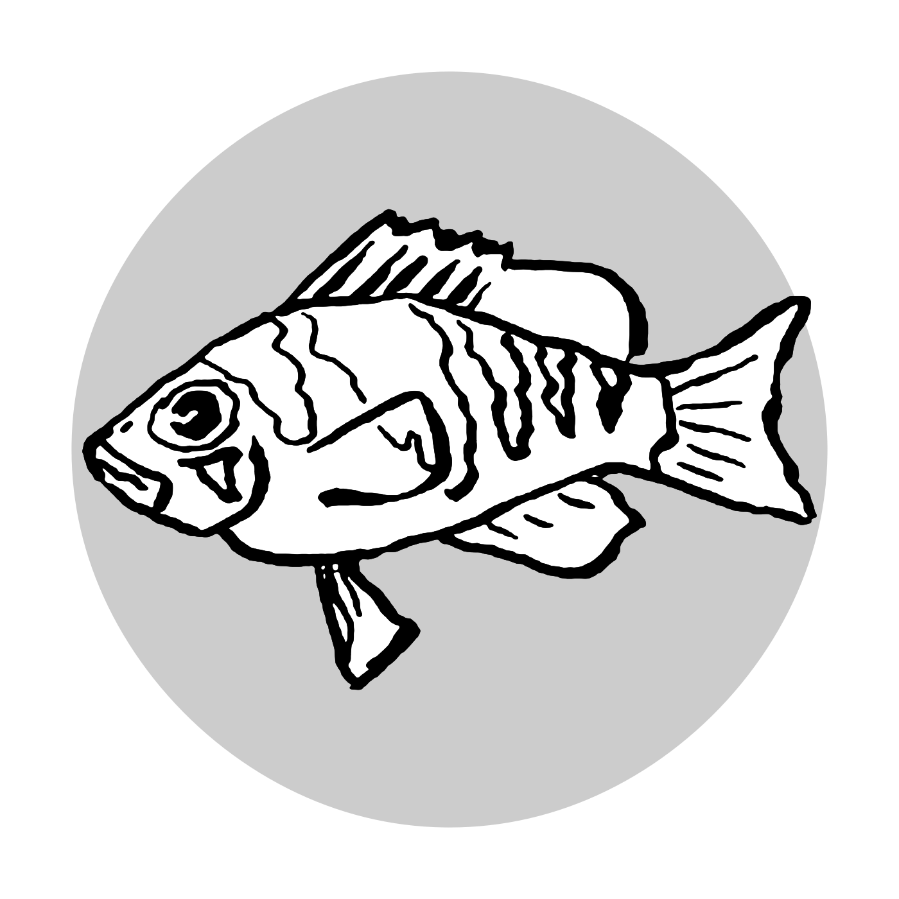

vignettes/hypogen_genotype_frequncies.Rmd
hypogen_genotype_frequncies.RmdTo be able to plot genotytpe frequencies, we need a genotype table where genotypes are encoded as 0,1, & 2 (homozygous reference allele, heterozygous and homozygous alternative allele).
This can be easily generated from a vcf file using VCFtools:
Unfortunately the vcftools output has the wrong orientation (samples as rows, sites as columns). So before we reed the genotypes into R they are transformed using awk:
To efficiently plot the genotypes frequencies we make use of the ggtern package as well as of the tidyverse (and of the hypogen package):
The package hypogen provides the function hypo_import_genotype_freq() which can read the transformed genotypee table and directly computes genotype frequencies:
file_genotypes <- system.file("extdata", "genotype_table.012.trans.txt.gz", package = "hypogen")
genotype_freqs <- hypo_import_genotype_freq(file_genotypes)This table can be directly plotted using gggtern. As a reference we also make use of the hypogen function hypo_hwe() to indicate Hardy-Weinberg genotype frequencies:
ggplot() +
coord_tern()+
geom_point(data = genotype_freqs,
aes(x = AA, y = Aa, z = aa ),
col = hypo_clr_LGs[18]) +
geom_path(data = hypo_hwe(n = 100),
aes(x = AA, y = Aa, z = aa ),
color ='black', alpha = .6)
